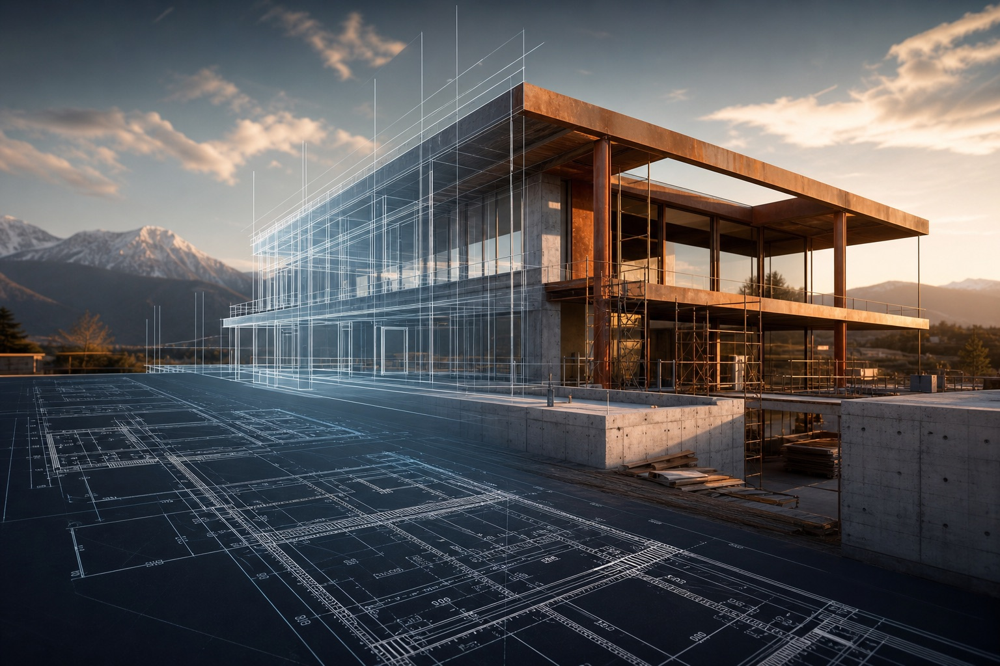

Dal progetto alla realtà
Edilizia moderna, misurata al millimetro.
Una piattaforma esecutiva per costruzioni civili, riqualificazioni energetiche e cantieri complessi in Friuli Venezia Giulia.
Richiedi una verifica tecnica preliminare
Nessun impegno. Ti ricontattiamo entro 1 giorno lavorativo.
Esplora i nostri progetti
28 anni
412k m² costruiti
A4 target energetico
Sequenza costruttiva
Il cantiere non viene mostrato. Viene costruito davanti a chi guarda.
- 01Analisi
Rilievo tecnico, budget, vincoli normativi e prestazioni attese.
- 02Progetto
Layout operativo, capitolato, materiali e controllo dei punti critici.
- 03Cantiere
Coordinamento delle squadre, tracciamenti, qualità e sicurezza.
- 04Consegna
Collaudi, documentazione, metriche energetiche e assistenza post intervento.
Dashboard prestazioni
Numeri leggibili, non slogan.
Mappa FVG
Cantieri, risultati e aree operative in un archivio vivo.
In corso
Campus residenziale Udine Nord
Nuovo complesso NZEB con struttura mista, facciata ventilata e gestione BIM del cronoprogramma.
- Durata
- 14 mesi
- Superficie
- 8.400 m²
- Risultato
- -42% consumi
Comparatore energetico
Prima e dopo, tradotto in impatto economico.
Risparmio stimato annuo: 4.158 euro
Servizi
Specializzazioni integrate in un unico metodo operativo.
Costruzioni civili
Residenziale contemporaneo con controllo di tempi, costi e prestazioni.
Ristrutturazioni
Interventi su edifici abitati, coordinati per ridurre fermo e interferenze.
Riqualificazione energetica
Involucro, impianti e ponti termici letti come un solo sistema.
Efficientamento energetico
Diagnosi, interventi mirati e metriche di rientro per ridurre consumi e dispersioni.
Cappotti termici
Stratigrafie, posa certificata e finiture ad alta durabilità.
Facciate e coperture
Rifacimenti tecnici con isolamento, impermeabilizzazione e sicurezza.
Edilizia industriale
Strutture produttive, ampliamenti e manutenzioni programmate.
Timeline aziendale
Crescita tecnica, non solo crescita dimensionale.
Fondazione operativa
Prime commesse residenziali e consolidamento delle squadre interne.
Energia e involucro
Introduzione di processi specifici per cappotti, coperture e riqualificazioni.
Controllo digitale
Computi, cronoprogrammi e verifiche qualità gestiti con flussi condivisi.
Cantieri data-driven
Reportistica visuale, KPI energetici e archivio progetti misurabile.
Magazine
Approfondimenti per decidere meglio prima di aprire un cantiere.
Cappotto termico: dove si nascondono gli errori costosi
Le metriche che anticipano ritardi e varianti
Contatti
Porta il progetto sul tavolo tecnico.
Risposta entro un giorno lavorativo per prime valutazioni, sopralluoghi e richieste di fattibilità.